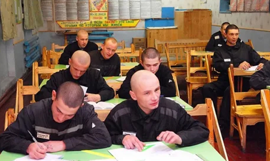

Освобождение от уголовной ответственности
Определяющим признаком уголовной ответственности является осуждение, т.е. вынесение обвинительного приговора, который признает лицо виновным в конкретном преступлении и назначает ему наказание.
ЦИТАТА
Освобождение от уголовной ответственности – это освобождение от вынесения обвинительного приговора.
Его следует отличать от освобождения от уголовного наказания и от неприменения уголовной ответственности в связи с обстоятельствами, исключающими преступность деяния (необходимой обороны, крайней необходимости и др.). В случае с освобождением от уголовного наказания лицо признается виновным, но освобождается от исполнения конкретного уголовного наказания. При обстоятельствах же, исключающих преступность деяния, нет преступного поведения, следовательно, нет основания уголовной ответственности (освобождение от уголовной ответственности возможно только тогда, когда преступление совершено).
Освобождение от уголовной ответственности не является реабилитацией лица. В связи с этим, лицо, возражающие освобождению его от уголовной ответственности и считающие себя невиновным в инкриминируемом ему преступлении, может отказаться от освобождения от уголовной ответственности. В таком случае уголовное судопроизводство осуществляется в обычном порядке, и в приговоре суда устанавливается виновность или невиновность лица с последующими правовыми последствиями.
В УК РФ предусмотрено пять видов освобождения от уголовной ответственности:
1. В связи с деятельным раскаянием (ст. 75 УК РФ).
2. В связи с примирением с потерпевшим (ст. 76 УК РФ).
3. В связи с возмещением ущерба (ст. 76.1 УК РФ).
4. С назначением судебного штрафа (ст. 76.2 УК РФ).
5. В связи с истечением сроков давности (ст. 78 УК РФ).
Амнистия также является видом такого освобождения, но она одновременно является и разновидностью освобождения от наказания, поэтому будет отдельно рассмотрена в разделе «Освобождение от уголовного наказания».
Освобождение в связи с деятельным раскаянием
Деятельное раскаяние – это добровольные и активные позитивные действия лица, совершившего преступление: добровольная явка с повинной, способствование раскрытию совершенного преступления; добровольное возмещение причиненного ущерба или заглаживание причиненного преступлением вреда иным образом (например, ремонт поврежденного имущества).
В науке уголовного права есть спор: одни исследователи считают, что требуется ли наличие всех указанных действий, другие – только отдельных.
Деятельному раскаянию присущи:
1) единый период времени, в течение которого возможно совершение действий, являющихся деятельным раскаянием (с момента окончания преступления или прерывания его против воли виновного и до момента вынесения приговора);
2) их нормативность (прямое указание этих действий в законе);
3) общественная полезность совершаемых действий;
4) активность;
5) добровольность совершаемых позитивных действий (возможность выбора лицом варианта дальнейшего поведения после совершения преступления).
Отдельную сложность при определении деятельного раскаяния вызывает оценка искренности раскаяния лица. Без специальных познаний в области психологии сделать однозначный вывод о том, на самом ли деле человек раскаялся, либо он лишь имитирует подобное раскаяние, невозможно. Более того, человек, совершивший впервые преступление небольшой или средней тяжести, может и не раскаяться в содеянном, считать свой поступок правильным, единственным выходом из сложившейся ситуации, но при этом из страха перед уголовным преследованием и наказанием, осуждением со стороны окружающих выполнить предписанные условия. Поэтому исследователи делают вывод: первостепенное значение имеют объективно выраженные действия лица, осуществившего явку с повинной, способствовавшего раскрытию и расследованию преступления, возместившего причиненный ущерб или иным образом загладившего вред, искренность же его раскаяния вторична.
Условиями освобождения от уголовной ответственности в связи с деятельным раскаянием являются:
а) лицо совершило преступление впервые. Данная норма не может применяться к лицам, ранее судимым, а также состоящим под следствием или судом либо уклоняющимся от следствия и суда. Если лицо прежде привлекалось к уголовной ответственности, но было освобождено от нее, оно считается ранее не совершавшим преступлений;
б) лицо вследствие деятельного раскаяния перестало быть общественно опасным;
в) совершенное деяние должно относиться к категории небольшой или средней тяжести. Деятельное раскаяние лица, совершившего преступление иной категории (тяжкое и особо тяжкое) может учитываться только в случаях, специально предусмотренных статьями Особенной части УК РФ. Например, лицо, добровольно освободившее похищенного, освобождается от уголовной ответственности (ст. 126 УК РФ). В этом случае имеет место обязательное освобождение от уголовной ответственности в силу деятельного раскаяния. В остальных случаях данный вид освобождения от уголовной ответственности является факультативным, т.е. не гарантированным по умолчанию: решение об освобождении от уголовной ответственности принимает орган дознания, следствия, прокурор либо судья с учетом не только характера и степени общественной опасности совершенного деяния, но также характера действий виновного, свидетельствующих о его деятельном раскаянии, и степени их активности.
Освобождение в связи с примирением с потерпевшим
Примирение с потерпевшим – это оформленный в надлежащей процессуальной форме отказ потерпевшего от своих первоначальных претензий и требований к лицу, совершившему преступление, отказ от просьбы привлечь его к уголовной ответственности (если уголовное дело еще не возбуждалось) или просьбу прекратить уголовное дело, возбужденное по его заявлению.
Условиями освобождения от уголовной ответственности в связи с примирением с потерпевшим являются:
а) совершенное деяние должно относиться к категории небольшой или средней тяжести;
б) преступление совершено виновным впервые;
в) факт примирения лица, совершившего преступление, с потерпевшим должен быть оформлен в надлежащем (письменном) виде;
г) лицо еще до примирения загладило причиненный потерпевшему ущерб.
Решение о прекращении уголовного дела (или об отказе в его возбуждении) может быть принято органом дознания или следователем с согласия прокурора, а также прокурором на любом этапе доследственной проверки или предварительного расследования, а также судьей (судом) – в любой момент судебного разбирательства вплоть до удаления судьи (суда) в совещательную комнату для постановления приговора.
Уголовно-процессуальный кодекс РФ (УПК РФ) в ст. 20 установил невозможность прекращения уголовного преследования в связи с примирением потерпевшего с обвиняемым дел частно-публичного обвинения (об изнасиловании, насильственных действиях сексуального характера, нарушении неприкосновенности частной жизни и т.п.).